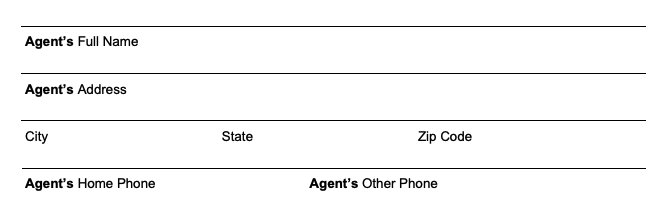
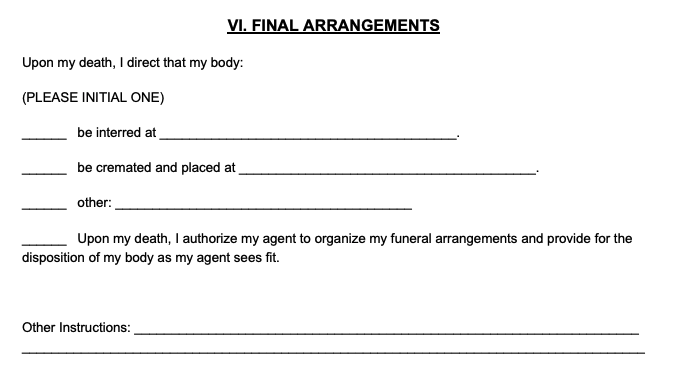

Advance Directives are end-of-life planning documents that establish your health care wishes if you’re incapacitated and can’t make your own decisions.
You can use an advance directive to explain to medical professionals what treatment you want to receive in an emergency or if you can’t speak for yourself, as well as make sure loved ones make the right health care decisions.
Advance directives can be confusing because the name of the document and its contents vary by State. Typically, an advance directive includes two forms:
- Living Will — explains what medical treatment you do (or do not want) to receive
- Medical Power of Attorney — appoints someone you trust to make medical decisions for you
Download the Advance Directive for your State to find the form you need. Learn how advance directives work and what you must consider before making one.
Advance Directive Forms – by State
Click to expand the table and find your State’s advance directive form and requirements.
| State & Laws: | Advance Directive Forms: | Execution Requirements: |
|---|---|---|
|
Alabama AL Code § 22-8A-4 |
Alabama Advance Directive for Health Care (Word, PDF) | Two witnesses or notarization |
|
Alaska AK Stat § 13.52.010 |
Advance Health Care Directive:
|
Two witnesses or notarization |
|
Arizona AZ Rev Stat § 36-3221 |
Arizona Living Will (Word) Arizona Health Care Power of Attorney (Word, PDF) |
At least one witness or notarization |
|
Arkansas AR Code § 20-6-103-c |
Arkansas Living Will (Word) Arkansas Durable Power of Attorney for Health Care (Word, PDF) |
Two witnesses or notarization |
What is an Advance Directive?
An advance directive, or an advance healthcare directive, is a legal document that tells healthcare professionals and loved ones what medical treatment you want (or don’t want) to receive if you’re dying or unconscious and can’t communicate your wishes.
Because laws vary across the US, each State has its format and definition for advance directives. Depending on where you live, you may need a single form or a combination of forms to express your wishes.
Despite the different laws, the meaning of an advance directive is ultimately the same: if you fall into a coma, develop dementia, become terminally ill, or get seriously injured, an advance directive makes sure your wishes are upheld regarding healthcare choices such as the following:
- Palliative & comfort care — managing pain to improve your quality of life
- Ventilation — using a ventilator to keep you breathing
- Tube feeding — being fed through a tube or IV
- Resuscitation — receiving CPR to resuscitate you if your breathing or heartbeat stops
An advance directive can also state whether you want your organs to be donated after death.
Three main elements of Advance Directives
The following individual forms are examples of different types of advance directives. Your state may have one hybrid document that includes several of these forms, or you must fill them out separately.
1. Living Will
A living will is a document that explains your treatment decisions if you fall into a coma or are unresponsive (such as how to prolong your life or manage pain).
The difference between an advance directive and a living will is that, in some states, the living will is a standalone document. And in other states, it’s part of an advance directive.
Read More: Advance Directive vs. Living Will – What’s the Difference?
2. Medical power of attorney (MPOA)
A Medical Power of Attorney form allows you to appoint an “agent” or “attorney-in-fact” to make medical decisions on your behalf if you cannot.
The living will part of an advance directive concerns the treatment you want, but a power of attorney gives someone the authority to make additional decisions for you.
3. Do not resuscitate (DNR)
A do not resuscitate (DNR) form tells medical workers to withhold life-sustaining treatment and not try to keep you alive. For example, you are not using cardiopulmonary resuscitation (CPR) or an automated external defibrillator (AED) to restart your heart or breathing.
Many advance directives include a DNR.
What Happens If You Don’t Have an Advance Directive?
Medical professionals cannot fulfill your treatment wishes if you don’t have an advance directive.
Your doctor and family members may have conflicting views on caring for you in different situations, which could emotionally tax your loved ones or lead to financial hardships. You may also suffer unnecessary, unwanted, prolonged, or painful treatments or even put your life at risk.
When Do I Need an Advance Directive?
You should create an Advance Directive if you want to control and have peace of mind over your future healthcare decisions. Your Directive will alleviate stress and confusion among healthcare professionals and your loved ones.
Consider creating an advance healthcare directive if you are…
- Over the age of 18 years old
- Military personnel being deployed overseas
- Married and want to pass legal authority over property to my spouse
- Concerned about informing my loved ones and healthcare providers of my preferences regarding life support, resuscitation, ventilators, feeding tubes, and pain management
- Pregnant
- Traveling abroad for a more extended period
- Undergoing surgery, however minor or routine it is
- Entering the hospital for any reason
- Diagnosed with a terminal illness
- Undergoing continuous medical treatment
- Concerned about my health
- Engaged in a high-risk profession (police officer, firefighter, logger, miner, aircraft pilot, roofer, etc…)
- Engage in extreme sports or other activities that put my health at risk
Seven questions to consider when creating your advance directive
- Whom do you wish to make healthcare and financial decisions for you should you become unable to communicate?
- Which medical treatments do you want to receive, and which ones are out of the question?
- Do you want to be resuscitated if your heart stops beating or if you stop breathing?
- If you fall terminally ill or become incapacitated, do you want to be cared for at home or the hospital?
- How will your medical care be paid for?
- Have you overlooked anything that will be potentially costly and a financial burden on your loved ones?
- Do you have sufficient insurance coverage?
How to write an advance directive
Use the steps below to help you fill out your advance directive, or skip ahead to learn how to use your form after it’s complete.
Step 1 – Write your name and review the definitions
The first part of an advance directive is the declaration. Fill out your name to declare that the document explains your wishes if you can’t speak for yourself and are of sound mind and legal age.
Next, check the definition of the medical states and care the document relates to, such as what constitutes life-sustaining treatment or a terminal condition.
Step 2 – Assign power of attorney
Whether you’re filling out a hybrid form or two separate ones, you must assign medical power of attorney as part of your advance directive and choose an agent (or attorney-in-fact) to act on your behalf.

On this part of the advance directive form, please fill out your agent’s contact information and make additional comments about which powers you do or don’t want them to have. Ensure your appointed healthcare agent is someone you can trust, as they must make crucial decisions in times of great stress, sadness, and uncertainty.
Step 3 – Complete your living will
On the living will part of the advance directive, initial your preferences next to the health care you want to receive if you are diagnosed with a terminal condition or fall into a permanently unconscious state.
You’ll need to choose whether you wish to receive life-sustaining treatments, artificial nutrition, and hydration or if you prefer your agent to decide.
You can also state your preference regarding relief from pain and any other wishes you might have:
Step 4 – Choose whether to donate your organs
You can choose whether to donate your organs in the event of your death and, if you do, for what purpose (such as therapy, transplant, research, or education).
You can also state that you do not wish to donate your organs or authorize your agent to decide.
Step 5 – Choose your final arrangements
Many advance directives allow you to detail what arrangements you want in place upon your death, such as if you want your body to be interred or cremated or if your agent handles these arrangements.

Step 6 – Sign your advance directive form
After completing all sections of the form, sign your name. Depending on your State’s execution requirements, you may also need signatures from your agent, several witnesses, and a notary public to legally bind the form.
Advance Directive Example
How to use your advance directive
After completing your advance directive form, store it in a safe place, such as a safety deposit box. You should also notify your healthcare provider and provide copies to your agent, primary-care physician, hospital, trusted individuals, and anyone named in the directive.
It isn’t set in stone once you have created an advance directive. Your opinions and values regarding future healthcare needs could change, so your directive can be modified to reflect these changes.
Consider making changes if any of the following occurs:
- You are diagnosed with a severe health condition
- You experience a significant deterioration or decline in health
- You experience the passing of a loved one
- You experience a divorce or other significant family change
- You enter a new decade of your life
Validating and updating your advance healthcare directive
When you’ve completed your Advance Healthcare Directive, there are a few steps you will need to take to make it valid.
- Witnesses: Depending on who witnesses your signature, some states require you to have your directive notarized to give it legal effect
- Notify your healthcare provider: Provide your healthcare proxy or agent, primary-care physician, hospital, trusted individuals, and anyone named in the directive with copies
- Storage: Keep your original directive in a safe place, such as a safety deposit box
Once your Advance Healthcare Directive has been created, it isn’t set in stone. Your opinions and values regarding future healthcare needs could change, so your directive should reflect those changes.
The five D’s of updating your directive
You should reassess and consider changes to your Advance Healthcare Directive anytime one of the following “Five Ds” occurs.
| Diagnosis | When you are diagnosed with a serious or grave health condition |
| Decline | When you experience a significant deterioration or decline in health |
| Death | Whenever you experience the passing of a loved one |
| Divorce | When you experience a divorce or other significant family change |
| Decade | When you enter a new decade of your life |
What Happens if You Don’t Use an Advance Directive?
An unclear and poorly drafted Advance Healthcare Directive could lead to unwanted, aggressive medical treatment.
Without an Advance Healthcare Directive, you risk your healthcare provider and loved ones not knowing your healthcare preferences and how best to accomplish them.
Your primary care physician or wife could have conflicting views on what should be done in certain medical situations, leading to highly contentious and confusing circumstances and possibly putting your life at stake.
A Living Will coupled with a Medical Power of Attorney allows you to take control of your future in case of medical emergency and uncertainty.
Having a clear and thorough advance healthcare directive can help ensure the following benefits and prevent these consequences:
| Benefits | Consequences |
|---|---|
| Right to self-determination, the process by which you control your own life | Creates confusion amongst family members over your healthcare wishes |
| Ensures the quality of life that is important to you, while avoiding treatments that may be lethal | Causes unnecessary, unwanted, prolonged or painful treatments |
| Alleviates pressure, confusion, and financial hardship for your loved ones and healthcare providers | Produces substantial healthcare maintenance costs |
| Clarifies any highly contentious medical issues that could arise amongst your family and other loved ones | Emotionally taxing on your loved ones |
| Provides your doctors with a blueprint on how to treat you | Organs and tissue not being donated |
Cost burdens associated with end-of-life care and treatment can be substantial. An estimated 20% of cases require a family member to quit their job, 31% claim to have lost most or all of their savings, and 20% reported a significant loss of their source of income. All of these hardships were incurred even with insurance.
With the growing complexity of today’s medical conditions and life-extending treatments, you are never too young or healthy to start drafting your Advance Healthcare Directive.
The case of Terri Schiavo
From 1990 to 2005, the U.S. was gripped by a famous right-to-die legal case involving Terri Schiavo, her parents, and her husband, Michael Schiavo.
After slipping into an irreversible vegetative state, Terri’s parents and husband entered into a highly publicized and prolonged legal battle over what her healthcare wishes would have been.
Because she had no Living Will or written instructions, there was disagreement over whether to keep Terri alive or remove her from life support. Terri’s parents argued to keep her alive via artificial nutrition and hydration, denying the medical diagnosis, while Michael sought to remove her from the feeding.
The Schiavo saga involved 14 legal appeals on top of numerous petitions, motions, and hearings, with her feeding tube finally released after 15 years.